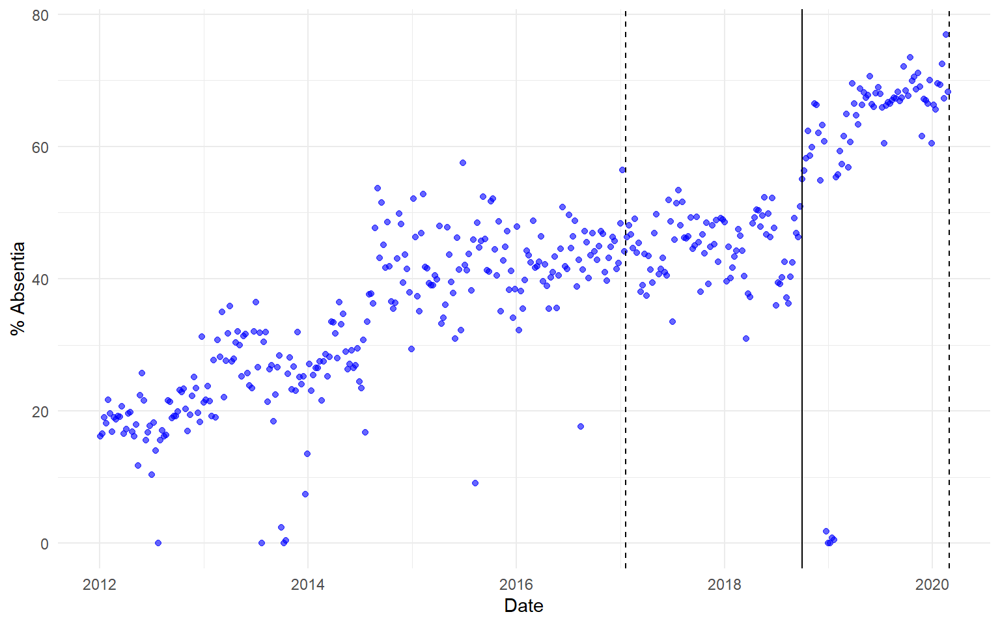
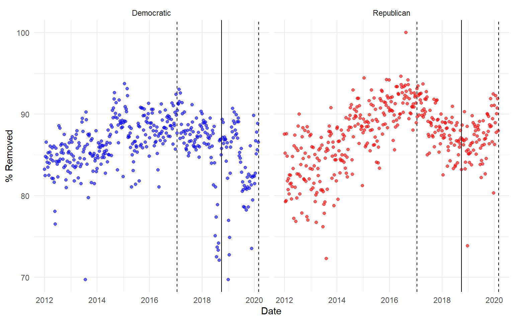
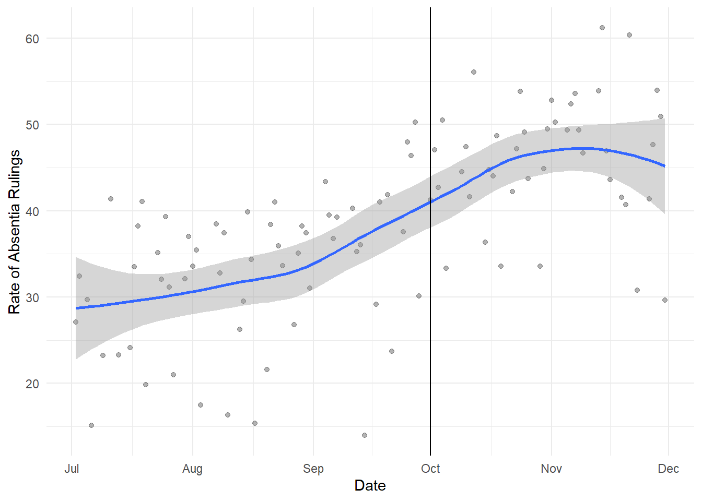
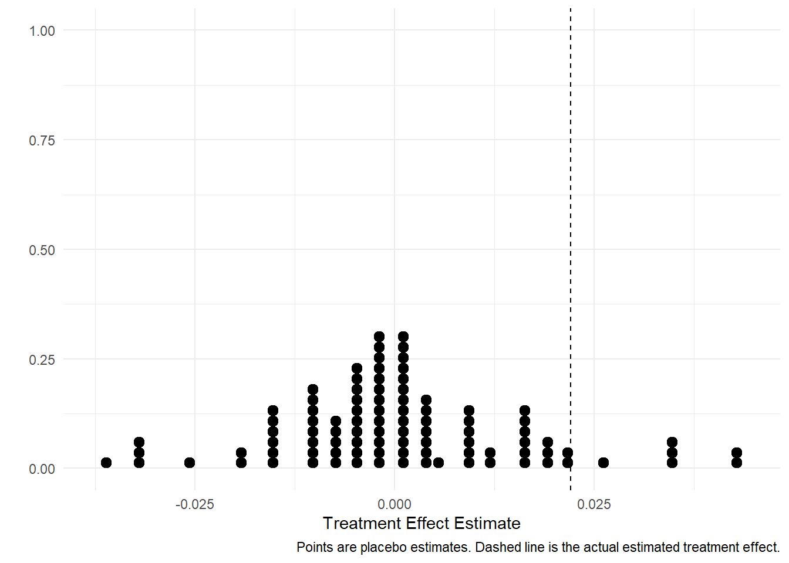

The Trump Effect: Results Section
1 Results
To estimate the effect of the quota policy on immigration judge behavior, we employ an interrupted time series approach (e.g. Mummolo 2018) , comparing the rate at which immigration judges remove defendants (and rule them removed in absentia) the year before and after the policy was implemented on October 1, 2018.
1.1 In Absentia Rulings
Figure 1 illustrates the empirical approach, plotting the weekly rates of in absentia rulings over time for defendants without legal representation. There is a striking increase in the rate of these rulings following the quota, particularly for Democratic judges.


In the year before the quota was implemented, immigration judges entered in absentia removal orders in 38.3% of these cases. In the year afterward, that rate rose to 51.9% – a 13.7 percentage point increase.
These results are consistent with our expectations, because in absentia removals are doubly effective at responding to the Trump administration’s quota policy: they are removal orders and they offer an efficient mechanism by which to process a case termination while making an appellate court remand difficult. This increase in in absentia rulings is larger for Democratic judges (18.6 percentage points) than for Republican judges (9.1 percentage points).
To ensure that this increase is not driven by a change in the composition of judges over time, we identify 335 judges that were actively hearing cases the year before and after the policy change1, and estimate within-judge effects using the following model.
\[\text{logit}(p_{ij}) = \alpha + X_{i}\tau + Z_{i}\beta + \gamma_j\]
Our outcome of interest \((p_{ij})\) is the probability that judge \(j\) orders the defendant in case \(i\) removed in absentia. \(X_{i}\) is the treatment assignment vector (equal to one if the the ruling occurred after the quota policy was implemented in 2018). \(Z\) is a matrix of case-specific predictors detailed above, \(\gamma_j\) are judge-level fixed effects, and \(\tau\) is the treatment effect of interest (ATT). Standard errors are clustered at the judge level. In the results below, we also interact the treatment with a variable indicating whether the defendant had legal representation, to test whether the policy had larger effects on immigrants without attorneys.
| All Judges | Democratic Judges | Republican Judges | |
|---|---|---|---|
| Post Policy | 0.467*** | 0.565*** | 0.311* |
| (0.104) | (0.146) | (0.158) | |
| Legal Representation | -2.956*** | -2.940*** | -2.992*** |
| (0.053) | (0.070) | (0.091) | |
| Post Policy x Legal Representation | -0.443*** | -0.494*** | -0.375* |
| (0.094) | (0.125) | (0.166) | |
| Asylum Application | -0.904*** | -0.867*** | -0.946*** |
| (0.043) | (0.062) | (0.070) | |
| In Custody | -3.923*** | -3.631*** | -4.400*** |
| (0.270) | (0.384) | (0.488) | |
| Mexican or Central American | 0.075 | 0.056 | -0.045 |
| (0.052) | (0.067) | (0.108) | |
| English Speaker | -0.793*** | -0.727*** | -1.064*** |
| (0.053) | (0.069) | (0.110) | |
| Num.Obs. | 277737 | 142515 | 89350 |
| FE: ij_code | X | X | X |
| + p < 0.1, * p < 0.05, ** p < 0.01, *** p < 0.001 |
This corresponds to an average marginal effect of 2.2 percentage points, and an even larger 4.2 percentage points for defendants without legal representation. Consistent with our expectations, the effect is larger for Democratic judges (2.91 percentage points) than for Republican judges (1.06 percentage points).
In our view, these estimates are somewhat conservative, because the models condition on custody status. Part of what’s driving the observed increase in in absentia rulings from Figure 1 is that judges became less willing to grant continuances for defendants who did not appear at their hearings post-quota. In the data, this is reflected in an increased share of rulings for non-detained defendants. When we control for custody status, we are in part blocking off this post-treatment mediator.
1.2 Removals
Turning to our second dependent variable, we find a somewhat more modest effect of the quota policy on the rate of removals and deportations. As Figure 2 illustrates, there is no obvious discontinuity starting October 1, 2018, unlike Figure 1.

There is, however, a small and statistically significant increase in removals in the year following the quota (see Table 2 ), suggesting that the Trump administration may have achieved a policy objective in addition to its stated efficiency objective.
| All Judges | Democratic Judges | Republican Judges | |
|---|---|---|---|
| Post Policy | 0.063+ | 0.120* | 0.003 |
| (0.038) | (0.055) | (0.060) | |
| Legal Representation | -2.090*** | -2.241*** | -1.938*** |
| (0.056) | (0.082) | (0.090) | |
| Asylum Application | 0.670*** | 0.555*** | 0.944*** |
| (0.044) | (0.063) | (0.082) | |
| In Custody | -0.235* | -0.428* | 0.019 |
| (0.100) | (0.186) | (0.131) | |
| Mexican or Central American | 0.576*** | 0.637*** | 0.449*** |
| (0.044) | (0.054) | (0.091) | |
| English Speaker | -0.300*** | -0.297*** | -0.417*** |
| (0.033) | (0.047) | (0.056) | |
| Num.Obs. | 305181 | 148536 | 103861 |
| FE: ij_code | X | X | X |
| + p < 0.1, * p < 0.05, ** p < 0.01, *** p < 0.001 |
The estimated Average Marginal Effect of the quota is a 1 percentage point increase in the rate of removal, corresponding to an additional 2063 immigrants ordered removed in the year following the quota.
2 Appendix: Robustness Tests
2.1 Robustness to Choice of Bandwidth
In the main text, we compare case outcomes the year before and after the policy change. But if we restrict the data to a smaller window around October 1, 2018, we can more credibly attribute changes in judge behavior to the quota policy. Figure 3 plots the estimated treatment effects by party, varying the size of this bandwidth.

Note that the formal assumptions of a regression discontinuity design are likely violated here, as judges could anticipate the policy and make changes ahead of time. And it appears they did; as Figure 1 illustrates, the rate of in absentia removals spiked not the week of October 1, but the week prior. Because judges were entering more in absentia removal rulings in the weeks before and after the policy change, local linear RD estimators (e.g. Calonico, Cattaneo, and Titiunik 2014) yield a statistically insignificant effect estimates. Formally, the increase in in absentia rulings appears not to be a discontinuity so much as a rapid increase over the course of 2-3 months.

2.2 Placebo Tests
Conducting a series of placebo tests – estimating the difference in in absentia removal rates for two months before and after a series of placebo treatment dates – we find that there are only two time periods in the data which yield a higher estimated treatment effect than the actual quota implementation: one in August 2014, and another in February 2019 (following an unexplained spike in detainee case decisions in January 2019). Figure 5 plots every estimated placebo treatment effect, with the red dot corresponding to the non-placebo estimate. Figure 6 illustrates the points in the dataset with larger estimated discontinuities (dashed lines).


3 Multilevel Model
In the main text, we present a model with judge-level fixed effects. This allows us to better isolate the causal effect of treatment at the quota implementation. But because these fixed effects are perfectly collinear with other judge-level characteristics, we cannot explore relationship between these characteristics and judge behavior. In this appendix section, we estimate a set of judge-specific treatment effects for judges who ruled on at least 100 cases before and after the quota policy, to explore how the estimated ATT varies by judge-level characteristics.
\[ \text{logit}(p_{ij}) = \alpha_j + X_i\tau_j + Z_{ij}\beta_j \tag{1}\]
Notice that this model differs from the model in the main text because \(\alpha_j\) , \(\tau_j\) , and \(\beta_j\) are judge-specific. We then regress the estimated \(\tau_j\) vector on a set of judge-level characteristics, including gender, political party, ethnicity, length of tenure as an immigration judge, and number of cases heard during their career. The results are consistent with the findings in the main text, as Republican judges have a slightly smaller estimated treatment effect, and there is some weak evidence that Latinx judges responded more strongly to the quota policy.
| Absentia | Removals | |
|---|---|---|
| Male | -0.018+ | -0.018* |
| (0.009) | (0.008) | |
| Republican | -0.014* | -0.032* |
| (0.005) | (0.012) | |
| Latinx | 0.031 | 0.050* |
| (0.021) | (0.016) | |
| Length of Tenure | 0.000 | 0.001 |
| (0.001) | (0.001) | |
| Previous Caseload | 0.000 | 0.000* |
| (0.000) | (0.000) | |
| Num.Obs. | 219 | 270 |
| FE: factor(judge_circuit) | X | X |
| + p < 0.1, * p < 0.05, ** p < 0.01, *** p < 0.001 |
References
Footnotes
See the Appendix for robustness tests varying the size of this bandwidth.↩︎